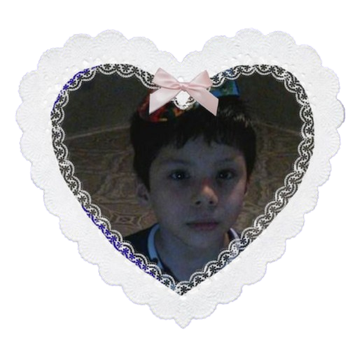

Hola mi tortuguito lindo 💗
Felices 9 meses, mi niño bonito. Ya 9 meses juntos y no puedo creer lo lejos que llegamos y todo lo que nos falta vivir juntitos...
Me encanta amarte mi niño ,me encanta hacerte feliz y ver esa hermosa sonrisita que me alegra hasta los días más oscuros, quiero amarte hasta el fin de mis días . Quiero estar en tus días más bonitos hasta los más tristes pero siempre junto a ti apoyándote para que nunca vuelvas a sentirte solito mi niño lindo. Eres la única personita que me importa y que si le pasara algo me afectaría tanto hasta morirme de tristeza. Eres el único chico que voy a amar por toda la eternidad, el único que quiero en mi vida, con el único que me quiero reír, con el único que me quiero enojar, con el único que quiero llorar, el único al que quiero amar, el único en el que quiero confiar ciegamente y demostrarle todos mis lados, y ver los suyos también.
Quiero estar contigo todas las vidas que sean posibles. No me importa en qué forma, ni dónde, ni cómo, pero quiero estar junto a ti, amándote, cuidándote y mimándote siempre. Quiero agradecerte por todo este tiempo juntos, lleno de amor, de risas y de aprender uno del otro. Quiero seguir aprendiendo cada cosa de ti y descubrir cada lado tuyo.
Eres lo más bonito que le ha pasado a mi vida. Llegaste de repente volviéndote mi persona favorita y convirtiéndote en mi lugar más seguro el chico que voy a elegir siempre, sin dudarlo, pase lo que pase. Y aunque a veces no lo diga tanto como debería, significas muchísimo para mí mi niño ,más de lo que puedo expresar con mis palabras.
Amo todo de vos mi tortuguito, tu manera tan linda de ser, tu forma de hablarme, de cuidarme, de hacerme sentir mejor cuando estoy en mis peores días, siendo una luz en mi vida. Amo cuando sos tierno conmigo, cuando me decís cositas bonitas hasta hacerme llorar de felicidad. Con vos no necesito nada más, solo saber que te tengo junto a mí.
Aunque estemos por ahora a distancia, aunque no podamos vernos todos los días o abrazarnos cuando queremos, siempre de alguna manera estás cerca mío. Estás en mis pensamientos todo el tiempo, en cada cosa que hago, en cada canción de amor que escucho, en cada momento de mi día. Sos parte de mí, aunque no estés físicamente acá.
Gracias por estos 9 meses tan hermosos, por cada detalle, por cada palabra, por cada momento que vivimos juntos. Gracias por dejarme amarte y hacerme sentir tan amada.
Gracias por existir, mi lindo niño te amo con todo lo que soy 💗
Te amo por siempre.